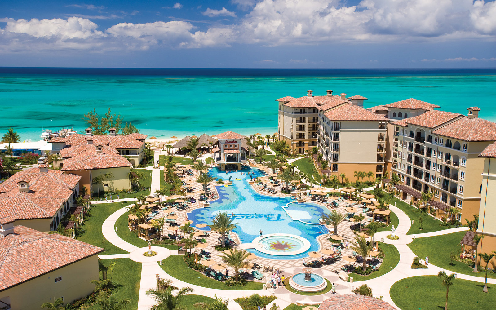

Turks and Caicos Islands
Turks and Caicos is an archipelago of 40 low-lying coral islands in the Atlantic Ocean, a British Overseas Territory southeast of the Bahamas. The gateway island of Providenciales, known as Provo, is home to expansive Grace Bay Beach, with luxury resorts, shops and restaurants. Scuba-diving sites include a 14-mile barrier reef on Provo’s north shore and a dramatic 2,134m underwater wall off Grand Turk island.
Like the islands themselves, Beaches all-inclusive resort in Turks & Caicos is renowned as "the last of the true exotics." One glance at its crystal clear waters and 12 miles of powder white sand and you'll see in an instant why Scuba Diving magazine named Turks & Caicos one of its top two diving destinations in the world, and why TripAdvisor chose the beaches of Providenciales as the best in the world.
For everyone who has ever dreamed of getting away from it all and finding a tropical hideaway far removed from all the hustle, bustle, fuss and muss of modern life-the Turks & Caicos is that rarest of discoveries, a true island escape. Envision 230 miles of sandy white beachfront, gently lapped by some of the clearest, aquamarine seas in the entire universe.

Beaches Hotel, Turks and Caicos Islands
Grace Bay Beach
If you're looking for a relaxing time at the beach, you cannot do better than the Turks and Caicos. Grace Bay Beach on Providenciales is of course famous, but all of our islands have really beautiful white sand beaches. Due to the extensive barrier reef and impressive walls, diving throughout the Turk and Caicos is spectacular. Providenciales offers a great selection of dive shops and access to exceptional sites, but boat trips out can longer than what is typical for Grand Turk and Salt Cay.
Providenciales is of course the center for beaches, luxury resorts, fine dining, marinas and shopping. It’s also the place to be for many water sports and activities, such as snorkelling, kiteboarding, parasailing and boat cruises. Diving is excellent. The majority of the population in the country lives here and all scheduled international flights land at the Providenciales International Airport (PLS).
 Beaches Hotel, Turks and Caicos Islands
Beaches Hotel, Turks and Caicos Islands
Home to the capital of Cockburn Town, up until the last few decades Grand Turk has been the center of activity in the Turks and Caicos. The country’s only cruise ship port is found here, along with the best historical attractions, including the Grand Turk Lighthouse, Turks and Caicos National Museum. The wild North Caicos and Middle Caicos offer a different perspective.
The greenest islands in the country, plantations here once exported cotton and sisal. Today, a quiet atmosphere, vast undeveloped land, secluded and impressive coastlines, and great natural points of interest are the main draws. Small vacation rentals make up most of the accommodation options on these two islands.
©2019 Vacation Spots
Top